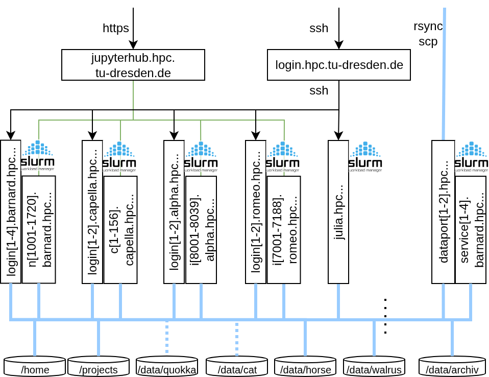

HPC Resources#
HPC resources in ZIH systems comprise the High Performance Computing and Storage Complex and its extension High Performance Computing – Data Analytics. In total it offers scientists about 100,000 CPU cores and a peak performance of more than 1.5 quadrillion floating point operations per second. The architecture specifically tailored to data-intensive computing, Big Data analytics, and artificial intelligence methods with extensive capabilities for energy measurement and performance monitoring provides ideal conditions to achieve the ambitious research goals of the users and the ZIH.
Architectural Design#
Over the last decade we have been running our HPC system of high heterogeneity with a single Slurm batch system. This made things very complicated, especially to inexperienced users. With the replacement of the Taurus system by the cluster Barnard in 2023 we have a new architectural design comprising five homogeneous clusters with their own Slurm instances and with cluster specific login nodes running on the same CPU. Job submission is possible only from within the corresponding cluster (compute or login node).
All clusters are integrated to the new InfiniBand fabric and have the same access to the shared filesystems. You find a comprehensive documentation on the available working and permanent filesystems on the page Filesystems.

{: align=center}HPC resources at ZIH comprise a total of five systems:
Name |
Description |
Year of Installation |
|---|---|---|
|
GPU cluster |
2024 |
|
CPU cluster |
2023 |
|
GPU cluster |
2021 |
|
Single SMP system |
2021 |
|
CPU cluster |
2020 |
All clusters will run with their own Slurm batch system and job submission is possible only from their respective login nodes. Each node’s hardware is further detailed on the respective page. For an overview on node-local storage, please refer to Slurm.
Login and Dataport Nodes#
Login-Nodes
Individual for each cluster. See the specifics in each cluster chapter.
2 Data-Transfer-Nodes
2 servers without interactive login, only available via file transfer protocols (
rsync,ftp)dataport[1-2].hpc.tu-dresden.deIPs: 141.30.73.[4,5]
Further information on the usage is documented on the site Dataport Nodes
Alpha Centauri#
The cluster Alpha Centauri (short: Alpha) by NEC provides AMD Rome CPUs and NVIDIA A100 GPUs
and is designed for AI and ML tasks.
37 nodes, each with
8 x NVIDIA A100-SXM4 Tensor Core-GPUs (40 GiB HBM2)
2 x AMD EPYC CPU 7352 (24 cores) @ 2.3 GHz, Multithreading available
1 TiB RAM (16 x 32 GiB DDR4-2933 MT/s per socket)
3.5 TiB local storage on NVMe device at
/tmp
Login nodes:
login[1-2].alpha.hpc.tu-dresden.deHostnames:
i[8001-8037].alpha.hpc.tu-dresden.deOperating system: Rocky Linux 9.6
Further information on the usage is documented on the site GPU Cluster Alpha Centauri
Barnard#
The cluster Barnard is a general purpose cluster by Bull. It is based on Intel Sapphire Rapids CPUs.
720 nodes, each with
2 x Intel Xeon Platinum 8470 (52 cores) @ 2.00 GHz, Multithreading available
512 GiB RAM (8 x 32 GiB DDR5-4800 MT/s per socket)
12 of the nodes provide 1.8 TiB local NVMe storage at
/tmpNodelist:
n[1607-1615,1628-1630]For the selection in Slurm, see Batch System Slurm
All other nodes are diskless and have no or very limited local storage (i.e.
/tmp)
Login nodes:
login[1-4].barnard.hpc.tu-dresden.deHostnames:
n[1001-1720].barnard.hpc.tu-dresden.deOperating system: Red Hat Enterprise Linux 9.6
Further information on the hardware is documented on the site CPU Cluster Barnard
Capella#
The cluster Capella by MEGWARE provides AMD Genoa CPUs and NVIDIA H100 GPUs
and is designed for AI and ML tasks.
156 nodes, each with
4 x NVIDIA H100-SXM5 Tensor Core-GPUs (94 GiB HBM2e)
2 x AMD EPYC CPU 9334 (32 cores) @ 2.7 GHz, Multithreading disabled
768 GiB RAM (12 x 32 GiB DDR5-4800 MT/s per socket)
814 GiB local storage on NVMe device at
/tmp
Login nodes:
login[1-2].capella.hpc.tu-dresden.deHostnames:
c[1-156].capella.hpc.tu-dresden.deOperating system: Rocky Linux 9.6
Offers fractions of full GPUs via Nvidia’s MIG mechanism
Further information on the usage is documented on the site GPU Cluster Capella
Julia#
The cluster Julia is a large SMP (shared memory parallel) system by HPE based on Superdome Flex
architecture.
1 node, with
32 x Intel(R) Xeon(R) Platinum 8276M CPU @ 2.20 GHz (28 cores)
47 TiB RAM (12 x 128 GiB DDR4-2933 MT/s per socket)
Configured as one single node
48 TiB RAM (usable: 47 TiB - one TiB is used for cache coherence protocols)
370 TB of fast NVMe storage available at
/data/nvme/<projectname>Login node:
julia.hpc.tu-dresden.deHostname:
julia.hpc.tu-dresden.deOperating system: Rocky Linux 8.9
Further information on the usage is documented on the site SMP System Julia
One half of Julia has been partitioned for exclusive use, and the available hardware changes
accordingly. See SMP Cluster Julia.
Romeo#
The cluster Romeo is a general purpose cluster by NEC based on AMD Rome CPUs.
188 nodes, each with
2 x AMD EPYC CPU 7702 (64 cores) @ 2.0 GHz, Multithreading available
512 GiB RAM (8 x 32 GiB DDR4-3200 MT/s per socket)
181.4 GiB local storage on SSD at
/tmp
Login nodes:
login[1-2].romeo.hpc.tu-dresden.deHostnames:
i[7001-7186].romeo.hpc.tu-dresden.deOperating system: Rocky Linux 9.6
Further information on the usage is documented on the site CPU Cluster Romeo